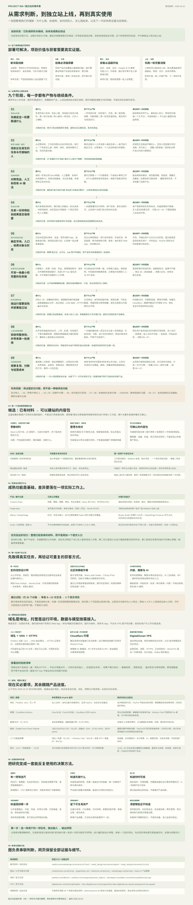

听到问题
社区求助、访谈、现有工作流程，让我们发现用户哪里费时。抱怨是线索，还要确认频率、代价和替代方案。
这个库让我们把独立站看成一条可验证的经营流程：发现需求与用户，比较竞品、验证样例，再开发部署，以真实交付、复用和付费检验价值。用一张完整图，帮助个人选题、安排投入、判断下一步。
我们要确认的是：有谁需要、如何找到、为什么选择、是否还会回来。
THE COMPLETE GUIDE, IN ONE MAP
从确定需求到独立站搭起来，再到真实使用、复用与收费。九个阶段同时说明动作、产物、通过条件、失败回路和对你的参考价值。素材整理是候选案例；图中采购与商业验证仍待执行。

这里展示图的开头 · 打开完整图查看全部细节 ↗把人群、任务、替代方案与渠道放在一起判断。
每一步有产物和通过条件，知道下一步做什么。
区分渠道、价值、体验和成本问题，决定继续或调整。
THE BUSINESS, END TO END
产品方向、目标市场、使用入口和部署方式，是四个不同的决定。一个人可以在国内开发，把英文网页工具部署到海外，向海外用户交付服务。
最初从“寻找有机会的新词”出发，后来明确偏向长期工具。新词、趋势与社区求助适合提供线索；热度与作者收入自述，都不能直接证明我们能找到用户或复制收益。现在优先跑通一条可验证的经营流程。
为哪类人，解决哪项反复发生的任务。
用户在哪，使用什么语言，我们从哪里接触他们。
网页工具、插件或 App；首轮以浏览器访问为主。
平台替我们运行代码，或使用自管 VPS。
社区求助、访谈、现有工作流程，让我们发现用户哪里费时。抱怨是线索，还要确认频率、代价和替代方案。
定向联系、社区参与、合作伙伴、平台目录、搜索和内容，都可能带来用户。需要验证每条渠道是否可执行。
Google 可索引页面、AI 搜索能够引用内容，只表示有机会获得曝光，无法保证排名、推荐或实际使用。
用户拿真实任务试用、完成交付、再次使用和付款，才逐步支持项目价值。访问量与免费注册只能证明部分环节。
AI 搜索与内容引用：用户在 AI 中提问时，公开教程、案例与产品页可能被检索或引用。需要跟踪实际带来的使用，无法保证被推荐。
AI 工作流中的工具调用：如果用户已经在 AI 助手或自动化流程里工作，可以在后期提供 API 或相应工具连接，让能力进入现有流程。这需要真实集成需求、权限和计费设计，不是网站收录后自动获得的入口。
平台生态与合作：插件、模板、集成目录和创作者合作可能帮助触达用户；各有接入规则和维护成本。第一轮仍先用可直接访问的网页验证，渠道成立后再扩展入口。
CHOOSE A SMALL, REAL TASK
我们偏向持续有人使用的工具。当前探索过三个方向；建站内容整理调研较深，另外两个仍是候选，不能按同等证据强度对待。
优先选用户容易找到、输入输出清楚、效果容易衡量的小任务。把“能实现”与“有人愿意持续用”分别验证；不必一次做成大平台。
A CONCRETE VALUE PROPOSITION
这里研究的是“设计师整理客户交来的建站材料”。客户通常是一家商户，付费与复用更可能来自持续接项目的设计师、小工作室。
创始故事、部分服务描述
联系电话与旧文件不一致
菜品、门店、团队混在一起
不知道各放在哪个页面
菜单更新、订位说明
营业时间仍然缺失
逐份阅读 → 对齐页面 → 核实冲突 → 找出缺项 → 再问一次客户
! 两个联系电话不同，请确认最终号码
! 补充营业时间与节假日安排
! 提供订位链接，确认照片使用权
每段内容保留来源；不确定项交由人确认。按页面整理的内容包 ＋ 来源索引 ＋ 冲突与缺项报告
客户不愿意推进项目、缺乏照片、尚未确定业务信息等问题，仍需要项目约定、沟通或服务协助。工具的效果要用真实项目总耗时衡量。
EVIDENCE BEFORE CONFIDENCE
求助说明痛点，官网说明竞争覆盖。它们都不能替代我们自己的真实用户验证。以下信息来自本次调研，未实际购买测试全部竞品。
| 产品 / 定位 | 公开覆盖的流程 | 公开价格记录 | 对我们的启示 |
|---|
免注册提交、自动催交、按页面收集、审批、模板、可视化位置与部分平台集成，都已有竞品覆盖。更低的价格、增加 AI，仍需结合具体任务证明差异。
DISTRIBUTION IS PART OF THE PRODUCT
第一批用户优先找持续接建站项目、亲自整理客户材料的设计师。对方有真实项目且愿意试用，才值得推进；公开服务页面只能说明匹配，不能证明购买意愿。
从 Webflow 服务商目录 ↗、工作室流程页、近期相关求助筛选对象，查看是否有持续项目与明确内容交接环节。
首轮目标：获得真实任务参与 webdesign / web_design 等相关讨论，先分享有用流程；有真实案例后，再与模板作者、培训者讨论合作。遵守社区规则。
中期目标：可重复的渠道发布具体检查模板、教程、前后对比案例和清晰的产品页面。跟踪来源到实际完成任务的转化，不保证收录、排名或 AI 推荐。
长期目标：持续被发现OUTREACH DRAFT
每次根据对方真实流程调整。此处只是文案草稿，没有发送任何消息。
ONE COMPLETE LEARNING CYCLE
先走完需求、样例、上线、获客、交付与复用，再决定投入多少。初期可以人工辅助，但要记录自己的人工介入，才能知道自动化后的价值与成本。
可先筛约 30 个对象，争取 8—10 次交流，再找 3 个真实项目。数字用于安排实验，不是承诺获客转化率。
例如 3 位试用者里，至少 2 位愿意带来下一项目，其中有人付款；总处理时间下降，人工修正也可控。此门槛是决策参考，不是统计证明。
用户只点赞不愿提供项目；整理工作本来很少；输出检查比手工更慢；实际需求主要是文案代写。分别调整定位、流程或服务形态。
| 环节 | 记录真实行为 | 帮助我们判断 |
|---|---|---|
| 触达与访问 | 来自哪里、是否匹配目标用户、是否愿意交流 | 渠道能否持续找到合适的人 |
| 开始与完成任务 | 是否提供真实材料、在哪里中断、是否得到可用结果 | 承诺是否清楚，使用流程是否可行 |
| 交付与修正 | 准备、处理、检查、返工总耗时；人工介入和 API 成本 | 究竟节省了什么，单位交付是否划算 |
| 再次使用与付款 | 有下一任务时是否回来、是否接受具体报价并实际支付 | 长期价值与收费假设是否获得支持 |
勾选只保存在本浏览器，代表个人执行记录，不自动改变研究结论。
A SOLVABLE DELIVERY LAYER
首轮以海外用户、英文网页工具为候选路线。用户通过手机或电脑浏览器访问；我们的网站与云平台可以同时成立，原生 App 并非第一阶段的必要条件。
域名可以在一家注册、网站放在另一家。代码保留在自己的 Git 仓库，数据保留可导出的备份；迁移托管通常可以继续使用同一域名。地区优先跟随目标用户，并实际测试访问与依赖连接。
BUY ONLY WHAT THIS STAGE NEEDS
个人、低预算、具备可付款 PayPal 的起步建议。以下是采购方案，尚未注册域名、开通付费套餐或发生采购。价格可能变化，以结算页面为准。
| 项目 | 明确选择 | 参考费用 | 购买时机 / 注意点 |
|---|---|---|---|
| 名字确定即买域名 | Porkbun 普通 .com ↗先注册 1 年 | $11.08 / 年当前注册、续费同价 | 名字未定先用临时网址。PayPal 可买、可手动续费，不能用 PayPal 自动扣续费；设置提醒。 |
| 现在开始DNS / HTTPS | Cloudflare 免费服务 | $0 | 绑定正式域名时配置。与 Workers Paid 是不同产品，起步无需购买网站 Pro 套餐。 |
| 现在开始网站托管 | Cloudflare Workers Free含静态资源托管 | $0 起 | 先部署可访问的第一版，验证输入、处理、输出和错误情况。 |
| 按需开通后端升级 | Cloudflare Workers Paid | $5 / 月起 | 免费方案不够再开；用量超出包含额度另计，并非无限资源。 |
| 按需开通文件 / 数据 | R2 文件存储 / D1 数据库 | 免费额度内 $0 | 有上传和保存功能再开。各自按量计费，存储与备份不是同一件事。 |
| 备用选项完整服务器 | DigitalOcean Basic Regular1核 · 2GB · 50GB SSD | $12 / 月含周备份约 $14.40 / 月 | 需要完整运行环境再创建，创建即计费；关机仍收费。PayPal $5 验证预付款抵首账单。 |
账号准备、确定域名、试部署、做交付样例。用最小投入学习实际资源需求。
黑五为 11 月 27 日，网络星期一为 11 月 30 日。日期窗口是复核计划，不代表商家活动已公布。
年付只有在规格匹配、续费清晰且经过测试时才值得买；否则继续免费或月度付费。
Porkbun 活动页仍显示上一轮结束，未核实到 Cloudflare 或 DigitalOcean Droplets 的本年具体折扣。促销文章、限期新客额度与长期低价要分别看待。主方案不依赖黑五。查看官方活动页 ↗
A SMALL BUDGET, WITH CLEAR ASSUMPTIONS
这是基于公开单价的预算估算器，不是实时报价或购买入口。开发时间、已有编程工具订阅、税费、超额资源与收款手续费未计入。
低流量、资源在包含额度内；AI 与额外存储按你填写的预算计入。
域名按年支付，本轮只计一次。软件开发时间与推广时间仍是投入的一部分。KEEP THE MEANING CLEAR
SOURCES & RESEARCH BOUNDARIES
已完成：方向讨论、公开需求与竞品调研、部署选型及预算方案、本研究网页与完整引导图。
尚未完成：真实访谈、候选商业工具上线、实际获客、付费验证、采购与商业运行测试。研究网页的公开展示与商业工具验证是不同的里程碑，浏览器中的个人清单勾选不会改变研究事实。
阅读口径：官网能力是供应商公开说明；社区内容是个人自述；产品切口与实验门槛是我们的建议。没有访问量、转化率或收入保证。